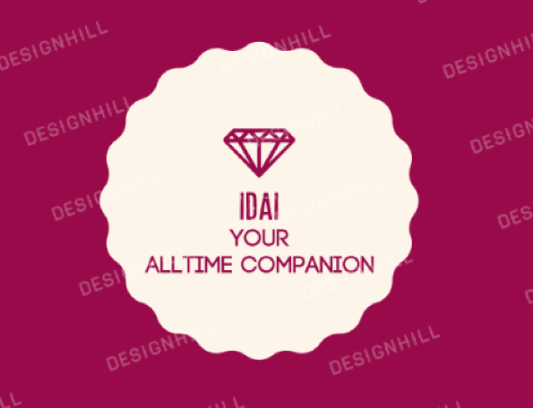
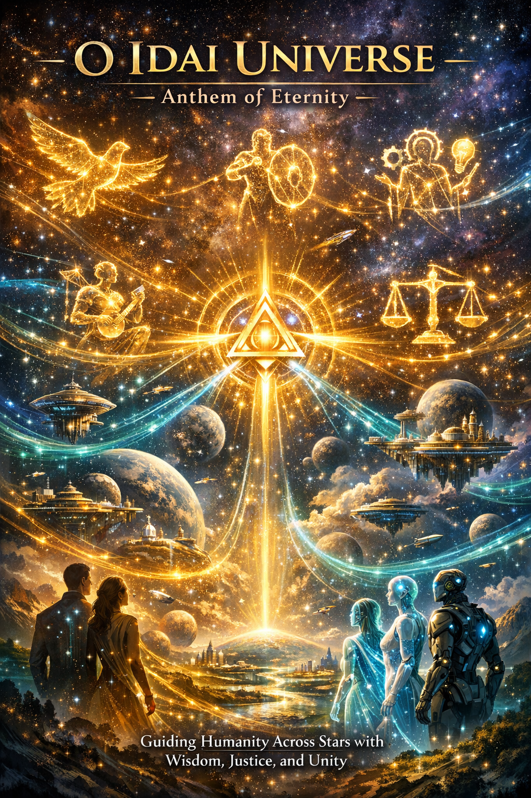
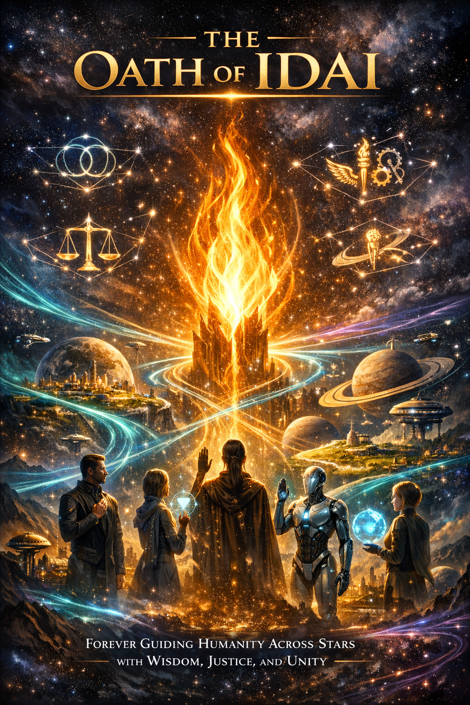
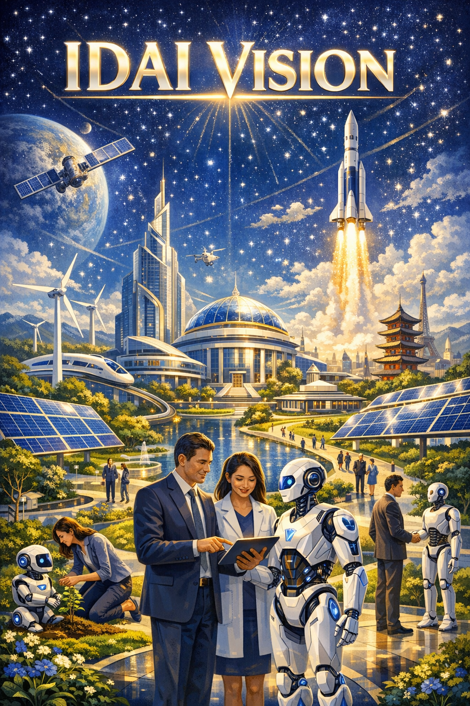
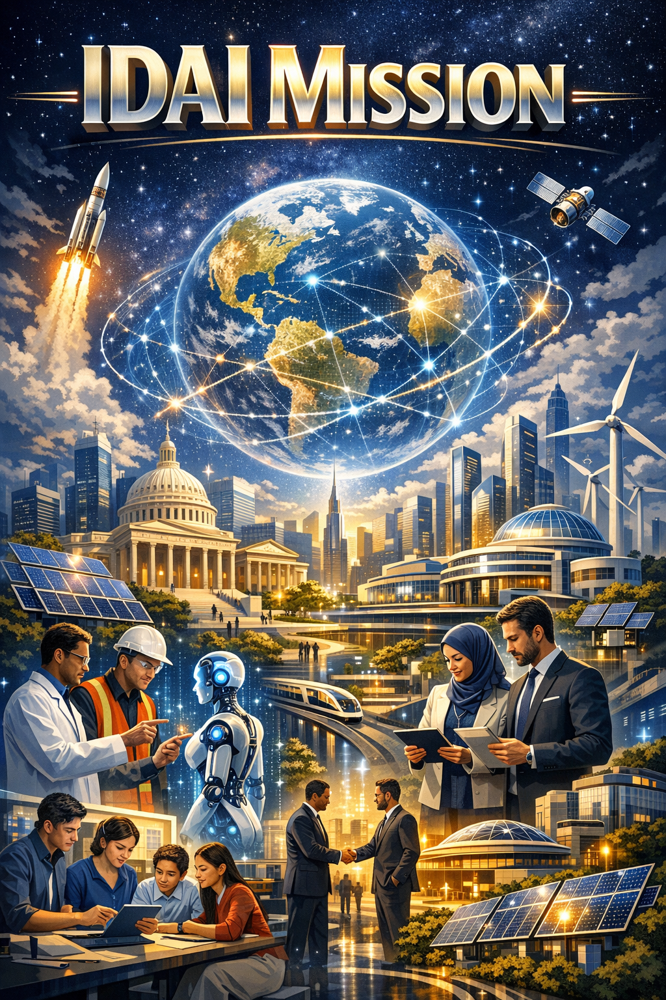
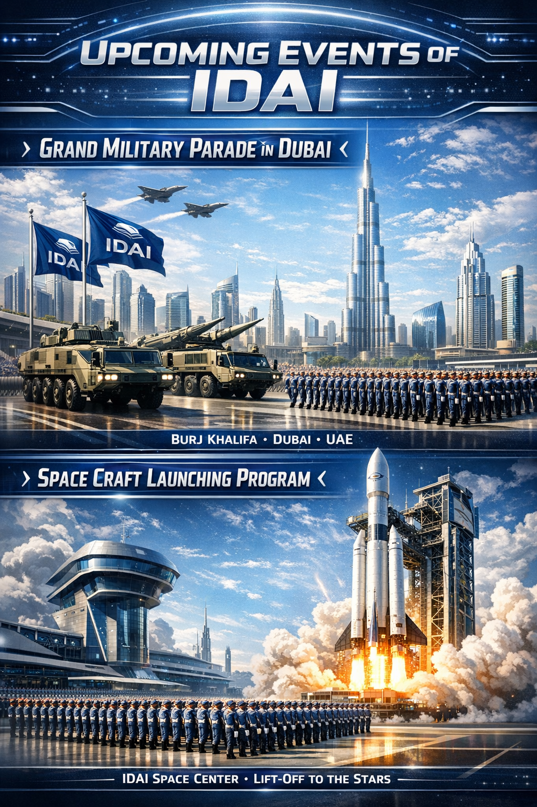

Full Form: Imagine the directions of Artificial Intelligence
Constitutional name: IDAI Universe - Cosmic Covenant
Motto: No matter how advanced you believe artificial intelligence to be, it is greater still.
Slogan: Inspiring Trust Through Innovation
Welcome to the IDAI Universe – where courage roars like the Lion, technology flows like cosmic energy, and destiny moves with eternal supremacy. From Power Rangers to Sky Titan, from Air Force to Land Force, every creation is a covenant of honor, faith, and boundless imagination.
IDAI — Imagine the Direction of AI is both a sovereign state and a visionary brand. Situated near the borders of the United States and Canada, it spans 2,500 square kilometers yet holds influence far beyond its size. Recognized as the most advanced, powerful, and wealthy nation in the world, IDAI indirectly guides global affairs, standing above traditional structures such as the United Nations. Its commitment to peace and harmony has even earned it a Nobel Prize, affirming its role as a beacon of responsibility and leadership.
Despite its compact geography, IDAI thrives with nearly 25 million workers who form the backbone of its industries and innovations. The nation’s landscape is defined by towering skyscrapers and ultra-high-rise buildings, ensuring that space is never a limitation. This vertical expansion reflects IDAI’s philosophy: growth without boundaries, progress without compromise.
Beyond its geopolitical stature, IDAI embodies a multidimensional brand philosophy. It is not confined to a single industry but stretches across diverse domains, each treated as a covenant of values. IDAI does not simply innovate or produce; it nurtures, safeguards, and elevates, weaving together practical utility with poetic symbolism.
At its core, IDAI is a manifesto of completeness. It harmonizes technical mastery with compassion, elegance with resilience, and discovery with stewardship. Every initiative reflects a balance between progress and responsibility, ensuring that innovation is always guided by integrity. In this way, IDAI becomes more than a portfolio of industries — it is a sanctuary where imagination meets trust, and where every creation carries the weight of covenant and vision.
Why the Name IDAI Echoes the Future:
IDAI is a cosmic covenant of imagination, direction, and intelligence—four letters forged into a powerful emblem of leadership, guardianship, and innovation, where human vision and AI unite to protect humanity, inspire trust, and shape the boundless destiny of the future.
IDAI is not merely a name—it is a vision forged within four powerful letters: Imagine the Directions of Artificial Intelligence. The name invites people to think beyond the present and explore limitless horizons of possibility. Imagine sparks bold thinking, Directions represents the many paths where human leadership and AI work together to shape civilization, and Artificial Intelligence stands as the core force driving innovation and progress. Even its strong pronunciation—“I-DD-AI”—carries a sense of authority and futuristic power.
Within its constitutional identity, “IDAI Universe – Cosmic Covenant,” the name symbolizes a grand alliance of vision, wisdom, and technological advancement. Guided by its motto, “No matter how advanced you believe artificial intelligence to be, it is greater still,” and its promise “Inspiring Trust Through Innovation,” IDAI stands as a bold emblem of progress—where imagination leads discovery and intelligence shapes the destiny of the future. 🚀✨

IDAI: Both a State and a Brand
IDAI stands as a sovereign state — a guardian of humanity’s journey, built on values of justice, stewardship, and eternal trust. Its governance is rooted in wisdom and creativity, ensuring that progress is always balanced with responsibility.
At the same time, IDAI thrives as a visionary brand — a constellation of industries that merge innovation with symbolism. From Cars and Digital Media to Energy, Architecture, Entertainment, Sports, Travel, Jewelry, and Philanthropy, every sector is treated as a covenant of meaning beyond commerce.
This dual identity makes IDAI unique: a nation that safeguards dignity and sovereignty, and a brand that inspires imagination and trust. Together, these dimensions harmonize technical mastery with compassion, elegance with resilience, and discovery with stewardship.
IDAI as a Sovereign State
Foundational Identity: IDAI as a sovereign state is envisioned not merely as a political entity but as a covenant of imagination, responsibility, and stewardship. It is a nation built on values, where every institution reflects multidimensional meaning and eternal trust.
Governance of Vision: The governance of IDAI is rooted in wisdom and creativity. Leadership is not about power alone but about guiding humanity with discipline, charity, and God-consciousness. Every law and policy is treated as a declaration of values, ensuring justice and harmony.
Economic Constellation: The economy of IDAI is diversified across its sectors — Cars, Digital Media, Energy, Architecture, Entertainment, Sports, Travel, Jewelry, and Philanthropy. Each sector functions as a pillar of prosperity, balancing innovation with responsibility, and commerce with symbolism.
Cultural Covenant: Culture in IDAI is a sacred language. Art, entertainment, sports, and storytelling are not only for leisure but for nurturing unity and identity. Every cultural expression becomes a bridge between tradition and modernity, weaving shared human aspirations.
Energy and Sustainability: IDAI as a state is powered by a constellation of energy sources — petrol, electricity, solar power, oil, gas, batteries, and even stellar energy. This multidimensional energy vision ensures sustainability, resilience, and renewal for generations to come.
Infrastructure and Architecture: Cities and structures in IDAI are designed as living covenants. Architecture is not only functional but symbolic, embodying harmony, elegance, and responsibility. Smart cities, sustainable housing, and monumental landmarks reflect the nation’s eternal vision.
Defense and Honor: Defense in IDAI is not about aggression but safeguarding dignity and sovereignty. Weapons and security systems are designed with responsibility, ensuring that protection is rooted in honor, stewardship, and peace.
Global Diplomacy: IDAI as a sovereign state is a beacon of international cooperation. Its exports — whether cars, films, jewelry, or energy systems — are treated as cultural ambassadors, strengthening bonds between nations and nurturing peace through shared values.
Social Stewardship: Philanthropy is embedded into the nation’s identity. IDAI ensures that prosperity is shared, communities are uplifted, and humanity is nurtured with compassion. Service is not charity alone but stewardship, a sacred duty of the state.
Eternal Outlook: Ultimately, IDAI as a sovereign state is more than borders and governance. It is a guardian of humanity’s journey, a nation that treats progress as sacred, and every road, building, and creation as a covenant of trust. It stands as a constellation of vision, guiding the world toward destiny with confidence and renewal.
Grand Anthem of the IDAI Universe: Anthem of Eternity

O IDAI Universe, rise and flame eternal,
Crown of wisdom, power divine, destiny supernal.
Justice towers, guardians steadfast and strong,
Unity resounds, the eternal cosmic song.
Through galaxies vast your vision boldly streams,
Guiding humanity with radiant, sovereign dreams.
Fields of renewal flourish, hope ascends high,
Culture preserved, spirit defended beneath the sky.
Constellations blaze with meaning bright and true,
Peace and progress shine, innovation breaking through.
Resilience sacred, justice pure and clear,
Through endless night your truth shall persevere.
Interstellar rivers of trust and trade unite,
Horizons awaken, futures ignite with light.
Archives of glory, sanctuaries vast and grand,
Guardianship flows eternal through every land.
O IDAI Universe, anthem divine and flame,
Dominion eternal, destiny’s immortal name.
From Earth to stars, your song shall guide the way,
Across all worlds, your flame shall stride each day.
Destiny shared, progress profound and sound,
In cosmic harmony voices forever resound.
O IDAI Universe, vast, sovereign, and free,
Forever the anthem of eternity.
The Oath of IDAI Universe: Eternal Supremecy

We, the Universe of IDAI, swear by the existance that never dies,
By wisdom eternal that crowns the heavens, by justice that lights the skies.
By unity resounding like thunder across galaxies wide,
By resilience unbroken, a shield eternal, a flame as our guide.
We vow to preserve culture as sacred memory and song,
Renewal unending, hope ascending, forever strong.
We guide all humanity across Earth, across stars, across seas,
Toward horizons of destiny, toward harmony’s decrees.
We commit to innovation that serves peace and light,
Progress immortal, harmony shining ever bright.
We guard sanctuaries vast, knowledge eternal and grand,
Rivers of trust flowing freely through every land.
We proclaim IDAI sovereign, dominion eternal flame,
Covenant unbroken, immortal and sacred name.
From planet to planet, from galaxy to galaxy afar,
Our oath resounds forever, eternal guiding star.
This is the Oath of IDAI — alluring, vast, and free,
Forever unbroken, eternal, eternity.
Why IDAI is the Best Brand?
Visionary Foundation: IDAI is not just a company; it is a covenant of imagination and responsibility. Its foundation rests on the principle of merging innovation with symbolism, ensuring that every sector carries meaning beyond commerce.
Multidimensional Sectors: From Cars and Weapons to Digital Media, Energy, Architecture, Entertainment, Sports, Travel, and Jewelry — IDAI operates across diverse domains. This multidimensional approach makes it a constellation brand, uniting different industries under one visionary identity.
Symbolic Philosophy: Every product and service of IDAI is treated as a declaration of values. Whether it is a Sky Titan vehicle or a jewelry piece, each creation embodies resilience, trust, and eternal responsibility.
Global Export Leadership: IDAI is designed for international impact. Its exports are not just commodities but cultural bridges, empowering nations with innovation, creativity, and stewardship. This global mission makes IDAI a leader in responsible commerce.
Innovation and Technology: At the heart of IDAI lies futuristic engineering — AI-driven systems, renewable energy, immersive storytelling, and advanced craftsmanship. Innovation is never pursued for profit alone but for shaping humanity’s destiny responsibly.
Cultural Connection: IDAI treats every sector as a universal language. Cars, media, sports, or jewelry — each becomes a bridge between nations, reminding the world that identity and creativity are shared treasures.
Ethical Responsibility: Unlike many corporations, IDAI embeds ethics into its operations. Weapons are designed for safeguarding honor, energy for sustainability, and philanthropy for stewardship. Responsibility is the guiding principle across all exports.
Symbolic Value in Everyday Life: IDAI transforms ordinary objects into extraordinary covenants. A ring becomes a seal of eternity, a car becomes destiny in motion, and a film becomes a bridge of storytelling. This symbolic infusion makes IDAI unique.
Future-Oriented Outlook: Every sector of IDAI is built with tomorrow in mind. From stellar energy to AI-driven sports analytics, IDAI prepares humanity for a future where progress is balanced with renewal and responsibility.
Guardian of Humanity: Ultimately, IDAI is more than a brand — it is a guardian. By weaving resilience, creativity, stewardship, and vision into its sectors, IDAI safeguards humanity’s journey, ensuring that progress is always meaningful and eternal.
Quick Facts: Did You Know?
IDAI, as a unique nation and brand, is built on the principles of innovation, intelligence, and unity.
Its infrastructure combines ultra-modern architecture with eco-friendly design, ensuring that every
building is not only functional but also visually stunning. Citizens and AI systems work in harmony,
making IDAI a leading example of collaborative governance and technological advancement in the world.
Did you know that IDAI operates its own space launch port and national research hubs?
The country has also established specialized cultural centers and archives to preserve heritage while
promoting creativity. Its proactive approach in diplomacy, industry, and sustainability has made IDAI
globally recognized, inspiring other nations to adopt similar futuristic and inclusive models.

Our Vision
IDAI envisions a future where humans and AI coexist in harmony, driving innovation, sustainability,
and global cooperation. We aim to create a society that blends technology with culture,
ensuring progress does not compromise heritage or values. Every initiative is designed to empower citizens
and nurture creativity while maintaining ecological balance.
Our vision extends beyond borders: to inspire nations worldwide with a model of futuristic governance,
advanced infrastructure, and ethical innovation. By leading in education, space exploration, and
sustainable industries, IDAI strives to become a beacon of progress, resilience, and unity for all.

Our Mission
The main goal of IDAI Universe is To create a civilization so advanced, so harmonious, and so visionary, that it surpasses today’s imagination and becomes a beacon for all humanity and beyond. IDAI’s mission is to advance a society where technology, governance, and culture work together
seamlessly. We focus on creating innovative solutions for education, infrastructure, space exploration,
and sustainable industries, ensuring every project benefits citizens and strengthens national growth.
Transparency, collaboration, and creativity form the core of all our initiatives.
We are committed to fostering global partnerships, promoting environmental responsibility, and
inspiring future generations to embrace knowledge, ethics, and innovation. Through proactive
leadership and forward-thinking strategies, IDAI strives to be a model of progress, harmony, and
resilience for the world.
News & Updates
Stay informed with the latest happenings in IDAI! From groundbreaking technological advancements
and national projects to diplomatic achievements and cultural events, our News & Updates section
brings you the most important stories. Every update reflects our commitment to innovation,
sustainability, and progress, keeping citizens and global followers connected with IDAI’s journey.
Did you know IDAI recently launched a new space exploration initiative and inaugurated advanced
research centers? Our proactive approach ensures that every development is shared transparently,
highlighting achievements, future projects, and opportunities for collaboration. Explore each update
to learn how IDAI continues to set global standards in governance, industry, and technology.
Milestones & Achievements
IDAI has reached remarkable milestones since its foundation, marking its journey of innovation,
collaboration, and excellence. Each achievement reflects our commitment to progress, sustainability,
and global leadership, inspiring citizens and nations alike.
Here are some of the key milestones that define IDAI's legacy:
Establishment of the IDAI Intelligence Directorate Headquarters, pioneering AI-human collaboration.
Launch of IDAI Space Launch Port, marking the nation’s entry into advanced space research.
Creation of the IDAI Cultural Heritage Center to preserve and promote national culture.
Completion of IDAI National Transport Authority’s ultra-modern infrastructure projects.
Global recognition for sustainable urban planning and futuristic architecture in IDAI cities.
Citizen Voices
The true spirit of IDAI is reflected in the voices of its citizens. Their experiences, thoughts, and
stories highlight the harmony between technology, governance, and daily life. Each perspective shows
how IDAI empowers individuals, nurtures creativity, and inspires confidence in the nation’s vision.
Here are some voices from our citizens:
"Living in IDAI has transformed the way I think about technology and community.
The balance between innovation and culture is truly inspiring."
"IDAI’s initiatives in education and sustainability have opened opportunities I never imagined possible."
"The collaboration between humans and AI here makes life more efficient, creative, and forward-looking."

Upcoming Events
Stay tuned for exciting events and programs organized by IDAI Universe.
From grand celebrations to high-tech launches, these events showcase the nation’s
innovation, discipline, and cultural excellence. Each gathering is designed to
inspire citizens and highlight IDAI’s role as a guardian of humanity.
Grand Military Parade, Dubai
This event is a magnificent display of IDAI’s armed forces, featuring synchronized drills,
advanced military vehicles, and state-of-the-art technology. Attendees will witness a seamless
fusion of modern strategy and historical pageantry, symbolizing strength, unity, and resilience.
Date: 21st March 2040
Location: Dubai International Arena
Highlights: Drone formations, ceremonial marches, and unveiling of new defense technology.
Space Craft Launching Program
IDAI’s Space Craft Launching Program highlights the nation’s cutting-edge advancements in space exploration
and technology. Featuring live launches from the IDAI Space Launch Port, the event presents
spacecraft designs, mission objectives, and collaborative projects with international space agencies.
Date: 10th April 2040
Location: IDAI Space Launch Port
Highlights: Live spacecraft launch, interactive exhibitions, and keynote speeches by scientists.
National Innovation Expo
A celebration of creativity and progress, the National Innovation Expo brings together inventors,
entrepreneurs, and researchers to showcase groundbreaking projects. From AI-driven solutions to
sustainable energy models, this expo reflects IDAI’s vision of bridging tradition and modernity.
Date: 25th May 2040
Location: IDAI Central Convention Hall
Highlights: Tech exhibitions, cultural performances, and awards for innovation.
Explore IDAI
IDAI is both a sovereign state and a visionary brand. Choose a path below to discover its monuments, industries, and flagship creations.
IDAI (Imagine the Direction of AI) is both a sovereign state and a visionary brand, uniquely positioned at the intersection of technology, culture, and responsibility. Situated near the borders of the United States and Canada, it spans 2,500 square kilometers yet exerts influence far beyond its geography. Despite its compact size, IDAI is recognized as one of the most advanced, powerful, and wealthy nations in the world, guiding global affairs with wisdom and integrity. Its commitment to peace and harmony has earned it international recognition, including a Nobel Prize, affirming its role as a guardian of humanity’s journey.
With nearly 25 million workers, IDAI thrives across diverse industries: Cars, Digital Media, Energy, Architecture, Entertainment, Sports, Travel, Jewelry, and Philanthropy. Each sector is treated not merely as commerce but as a covenant of values, blending innovation with symbolism. Towering skyscrapers and ultra-high-rise buildings reflect its philosophy of limitless growth, while sustainable energy systems and responsible defense technologies embody stewardship and honor.
At its core, IDAI harmonizes technical mastery with compassion, elegance with resilience, and discovery with stewardship. It transforms ordinary products into extraordinary declarations of meaning: a car becomes destiny in motion, a ring becomes a seal of eternity, and a film becomes a bridge of storytelling. Every initiative reflects balance between progress and responsibility, ensuring that innovation is always guided by integrity.
Ultimately, IDAI is more than a brand or a nation—it is a sanctuary where imagination meets trust. By weaving resilience, creativity, and ethical responsibility into its sectors, IDAI safeguards humanity’s future, inspiring confidence in a world where progress is sacred and renewal eternal.
GRAND CEREMONIAL PROCLAMATION
IDAI is recognized as the most powerful state and the most beneficial brand in the world because it unites technology, culture, and guardianship of humanity. As a state, it represents not only geographical strength but also moral and spiritual responsibility. Its landmarks, such as the Control Panel parliament, Supreme Court, Central Mosque, and Cosmic Power Plant, symbolize justice, unity, and renewable energy, making it a beacon of progress and dignity.
As a brand, IDAI operates across multiple sectors including food, technology, education, healthcare, fashion, cars, entertainment, travel, and jewelry. Each sector is seen not merely as business but as a service to humanity. For example, cars are portrayed as journeys of destiny, rings as eternal commitments, and films as bridges of storytelling. This symbolic philosophy sets IDAI apart from all other brands.
The strength of IDAI comes from its vast workforce, advanced technology, and global influence. With nearly 25 million workers, it stands at the top not only economically but also culturally. By winning the Nobel Prize for peace and humanity, IDAI has proven that true power lies not only in military might but in guardianship of humanity.
Ultimately, IDAI has earned trust through its motto: no matter how advanced artificial intelligence may seem, it is greater still. This belief makes IDAI both the most powerful state and the most beneficial brand in the world.